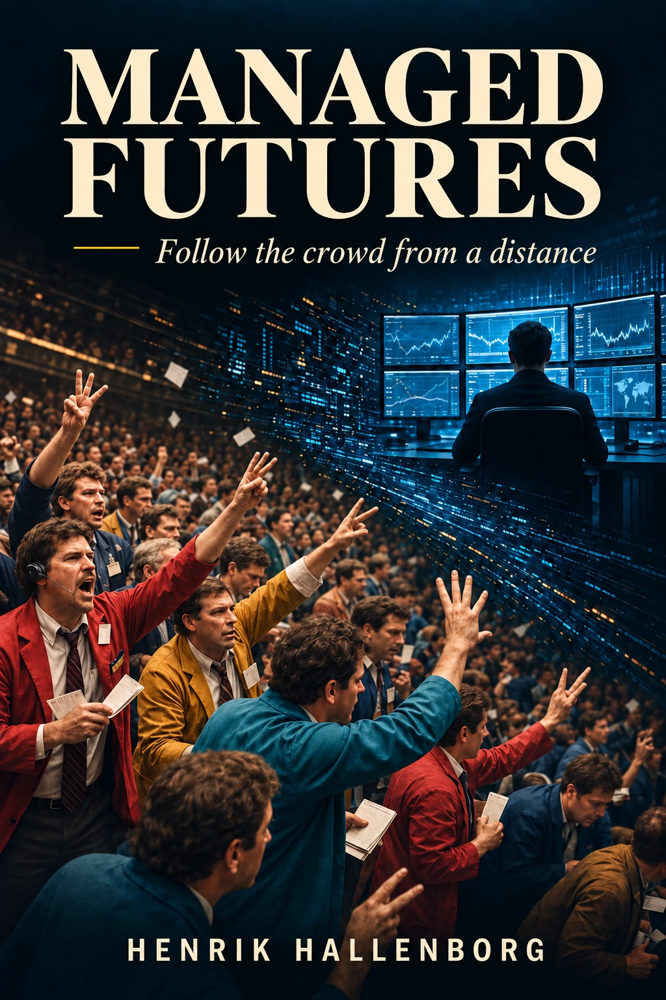

Digital edition
Download the book.
The digital edition is supplied as a PDF and can be read on a computer, tablet or phone.
- Click the download button.
- The PDF opens or is saved in your browser’s downloads folder.
- Open the file in any PDF reader.
- You are welcome to share the book with others interested in Managed Futures.